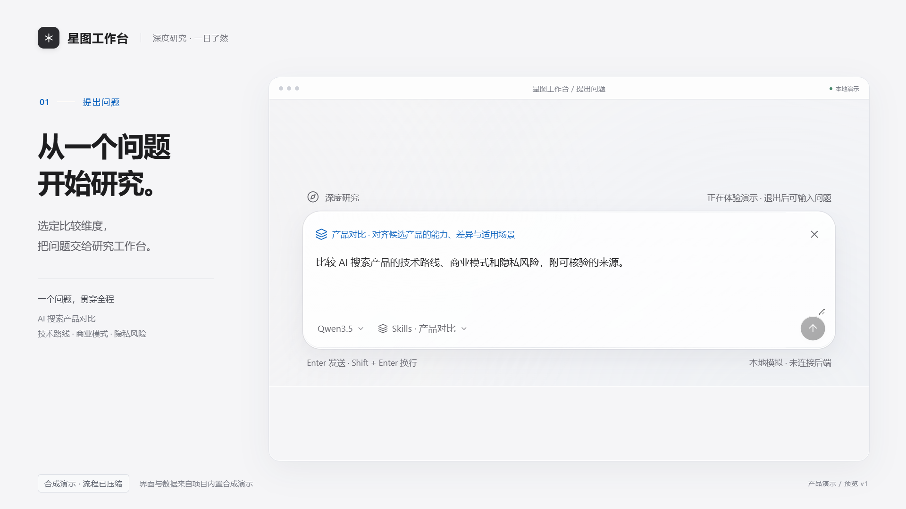
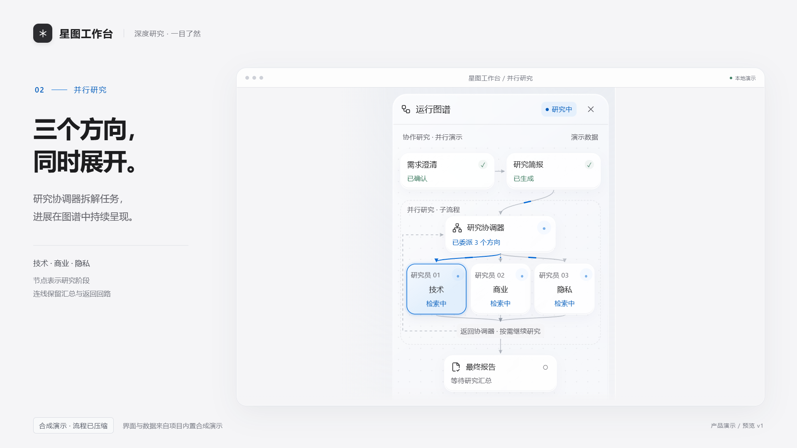
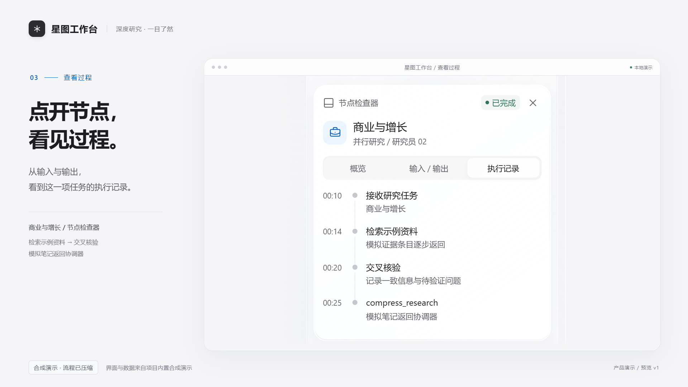
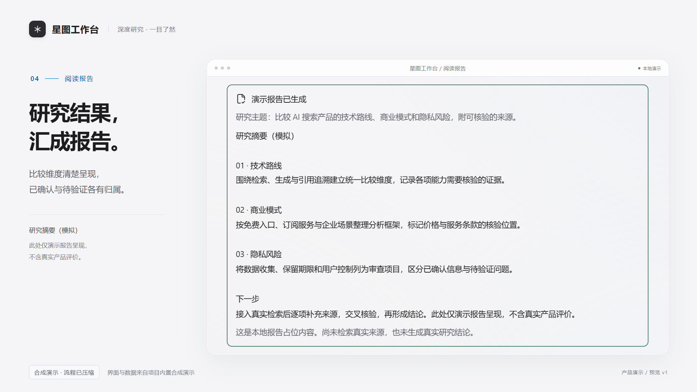
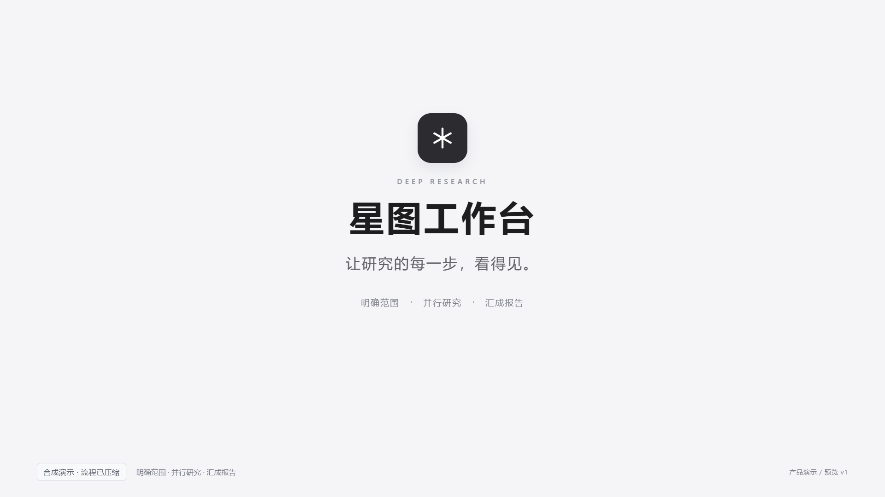

12 秒方案：问题 → 并行研究 → 执行记录 → 报告 → 品牌。下方为 2–8 秒的无声动效小样。
播放完整交互分镜 / 拖动逐帧检查 · 打开五帧总览 · 检查记录

1.5 秒 · 第 45 帧 · 01 / 提出问题
3.5 秒 · 第 105 帧 · 02 / 并行研究
6.5 秒 · 第 195 帧 · 03 / 执行记录
8.5 秒 · 第 255 帧 · 04 / 阅读报告
11.5 秒 · 第 345 帧 · 05 / 品牌收尾